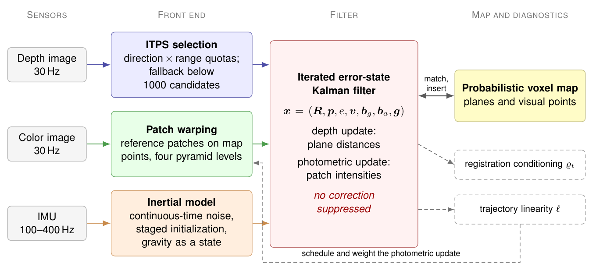
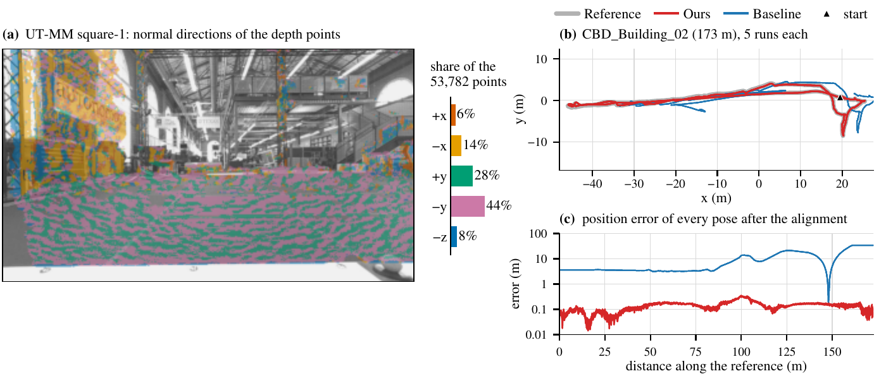
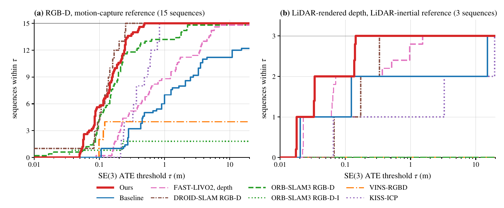
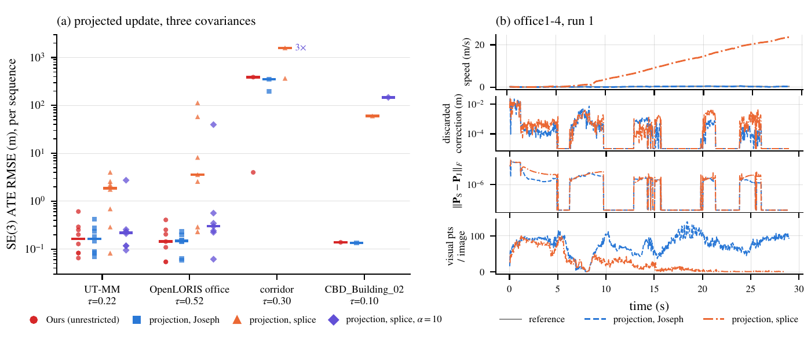

Abstract
Purpose: Consumer depth cameras often constrain motion weakly in large rooms, corridors, and outdoor scenes. We examine how correction projection, point sampling, inertial weighting, and photometric fusion affect RGB-D–inertial odometry.
Methods: Classical restricted-gain theory separates the effect of projecting a correction from that of its stored covariance. A shared-map iterated Kalman filter, adapted to consumer depth with spatially distributed samples, continuous-time inertial noise parameters, staged initialization, and photometric updates, is the experimental platform. Controlled experiments compare projected updates with Joseph-form or spliced covariances, sampling policies, and noise models.
Results: With matched triggers, storing the splice raises the per-sequence error by geometric-mean factors of 6 on UT-MM and 32 on OpenLORIS and diverges in every run of a long outdoor sequence, whereas the same projection with Joseph-form covariance has errors similar to the unrestricted filter, on two sensing platforms and in two batches. Inertial noise weighting and photometric fusion each lower the error substantially, whereas information-guided quotas show no significant advantage over uniform sampling. On 18 primary sequences (15 consumer RGB-D recordings with motion-capture references, three with sparse LiDAR-rendered depth and a correlated reference), the estimator completes all 90 runs, replayed at the recorded rate, with translational absolute trajectory error below 0.5 m, which no other online method compared achieves; the measured front-end stages average 12–22 ms per frame on four desktop CPU cores.
Conclusion: A restricted correction cannot be judged apart from the covariance stored with it. Failures on additional scenes and an uncalibrated covariance limit generalization.
The estimator

Results

square-1: the 53,782 candidate points tinted by the direction of
their surface normal. Floor points dominate, only 20 % face sideways, and the walls are about 7 m away, so
the frame barely constrains lateral motion. (b) The 173 m walk of FAST-LIVO2 CBD_Building_02: five
runs of Ours and five of the Baseline, our earlier suppression-based system, SE(3)-aligned to the LiDAR–inertial
reference. (c) Position error against distance: Ours stays within 0.36 m (ATE 0.14 m in every run); the
Baseline runs reach 34 m (ATE 14.8 m). The Baseline also differs in its inertial model and quota fill; the
paper's ablation isolates the projection.

office1-4: speed, the
discarded part of the correction, the splice-minus-Joseph covariance difference, and visual map points per
photometric update.Field recordings
Twelve recordings from the LiDAR-free platform that motivates the paper: a RealSense D455 and its BMI055 IMU, logged on an NVIDIA Jetson Orin NX (color and depth at 30 Hz, IMU at 200 Hz), as ROS 1 bags. They have vibration-contaminated IMU data and no external reference. Released under CC BY 4.0 on Hugging Face.
| Site | Sequence | Environment | Duration (s) | Size (GB) |
|---|---|---|---|---|
| A | empty_1 | greenhouse crop rows | 43.3 | 4.65 |
| A | empty_2 | greenhouse crop rows | 22.7 | 2.45 |
| A | empty_3 | greenhouse crop rows | 106.0 | 11.39 |
| A | floricane2_2 | greenhouse crop rows | 8.8 | 0.95 |
| A | floricane2_2_2 | greenhouse crop rows | 127.0 | 13.65 |
| A | canbarry_28_1 | raspberry canes | 35.2 | 3.78 |
| A | outside_1 | open field in sunlight | 45.2 | 4.86 |
| A | outside_2 | open field in sunlight | 115.8 | 12.45 |
| B | Bolter_1 | building corridors | 46.0 | 4.95 |
| B | Bolter_2 | building corridors | 65.4 | 7.03 |
| B | Bolter_3 | building corridors | 63.5 | 6.82 |
| B | Bolter_4 | building corridors | 34.8 | 3.74 |
Site A is a commercial berry farm; Site B is a university building.
Code
The estimator (ROS Noetic, CPU only, Docker build for amd64 and arm64), every configuration behind the paper's tables and figures, the dataset converters, and the evaluators are on GitHub under the GPL v2.
git clone https://github.com/tuananh1007/RGBD-Inertial-Degeneracy.git
cd RGBD-Inertial-Degeneracy
docker build -t rgbd-inertial:v1.0 .
python3 scripts/convert_utmm.py square-1.bag data/utmm/square-1_d455.bag
BASE_CFG=utmm.yaml CAM_CFG=camera_utmm.yaml bash scripts/run_sequences.sh \
$PWD/results/utmm $PWD/data/utmm rgbd-inertial:v1.0 s_ours_lin 1 1 square-1
python3 scripts/evaluate_runs.py results/utmm data/utmmCitation
@unpublished{vu2026sampling,
title = {Sampling, Fusion, and Covariance in {RGB-D}--Inertial Odometry under Depth Degeneracy},
author = {Vu, Tuan-Anh and Zhao, Xiaoyang and Jawed, M. Khalid},
note = {Under review},
year = {2026}
}